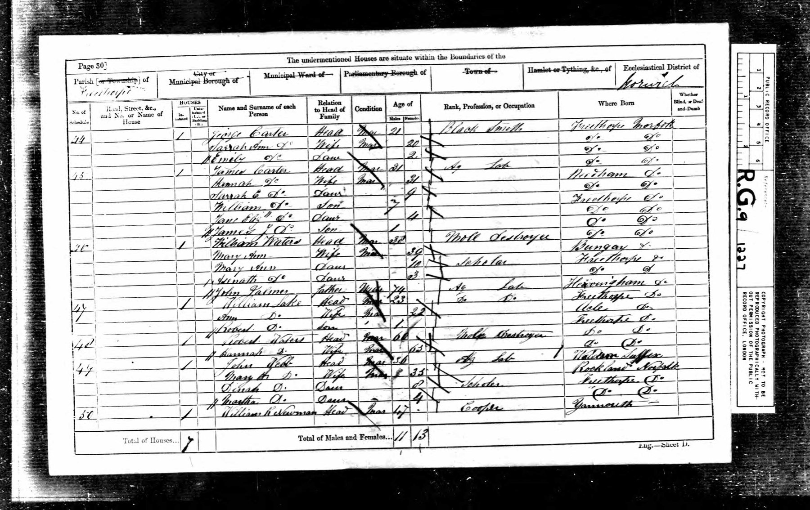

William Robert Newman 1813–1890
Peter's 3× great-grandfather by adoption.
William Robert Newman was born in 1813 in Great Yarmouth, Norfolk, England, United Kingdom (according to an online family tree)1. He died on 27 May 1890 in Yates, United States (according to an online family tree)1.
Family
- Partner
- Elizabeth Flower b. 1814
- Children
- Edward Newman 1844–1909 tradition
Life events
| Event | Date | Place and details |
|---|---|---|
| Born | 1813 | Great Yarmouth, Norfolk, England, United Kingdom According to an online family tree1 |
| Lived | 1851 | Freethorpe, England, United Kingdom According to an online family tree1 |
| Lived | 7 Apr 1861 | Freethorpe, England, United Kingdom2 |
| Died | 27 May 1890 | Yates, United States According to an online family tree1 |
Records

Sources
- FamilySearch Family Tree: William Robert Newman (9KW4-JD9).
- 1861 England Census, Parish of Freethorpe, Norfolk, Schedule 50, pp. 30–31.
Page 30, line 25: 50 | | 1 | William R Newman | Head | Mar | 47 | | Cooper | Yarmouth [Do.] / Page 31, lines 1–5: Elizabeth Do | Wife | Mar | | 47 | | Freethorpe Norfolk / William Do | Son | Un | 19 | | Ag Lab | Do Do / Edward Do | Son | Do | 16 | | Do Do | Do Do / David Do | Son | | 13 | | Do Do | Do Do / George Do | Son | | 10 | | Scholar | Do Do
1861 England Census (PRO RG 9 / 1227, Folio 63v–64r, Pages 30–31, Parish of Freethorpe, Schedule 50): William R Newman, Head, Married, age 47, Cooper, born in Yarmouth, Norfolk (enumerated on line 25 at the bottom of Page 30), living with his wife Elizabeth Newman (age 47, born Freethorpe, Norfolk) and sons William (19, Ag Lab), Edward (16, Ag Lab), David (13, Ag Lab), and George (10, Scholar) on lines 1–5 at the top of Page 31.